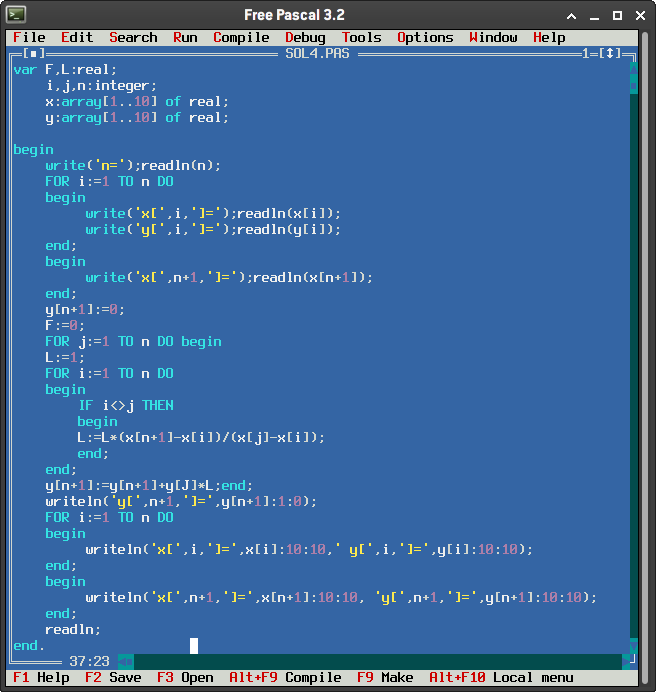

Pascal (1970)
Pascal é uma linguagem de programação de alto nível desenvolvida pelo cientista da computação suíço Niklaus Wirth em 1970. Ela foi projetada com o objetivo de fornecer uma linguagem de programação clara, estruturada e eficiente, adequada para o ensino e o desenvolvimento de software de sistemas.
Uma das principais características é sua sintaxe simples e legível, que facilita a compreensão e a depuração do código. Foi projetado com foco na programação estruturada, incentivando a divisão de um programa em módulos, funções e procedimentos independentes e bem definidos.
Embora Pascal tenha sido substituída por linguagens mais modernas em muitos contextos, seu legado permanece presente em outras linguagens de programação.
Atividade desenvolvida como extensão no projeto
PACEX/Mundo Tech do curso de análise e Desenvolvimento de Sistemas
Unipar - Cascavel